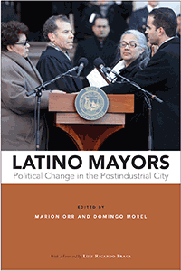

<HTML><head><script> (function(i,s,o,g,r,a,m){i['GoogleAnalyticsObject']=r;i[r]=i[r]||function(){  (i[r].q=i[r].q||[]).push(arguments)},i[r].l=1*new Date();a=s.createElement(o),  m=s.getElementsByTagName(o)[0];a.async=1;a.src=g;m.parentNode.insertBefore(a,m)   })(window,document,'script','//www.google-analytics.com/analytics.js','ga');   ga('create', 'UA-43183130-1', 'temple.edu');   ga('send', 'pageview'); </script><title>Edited by Marion Orr and Domingo Morel: Latino Mayors - Print</TITLE><link rel="stylesheet" href="../general.css" type="text/css"><SCRIPT LANGUAGE = JAVASCRIPT></SCRIPT></HEAD><BODY LINK="#3152A5" VLINK="#3152A5" ALINK=Gray BGCOLOR=White><CENTER><P CLASS=intro><br>The first book to examine the rise of Latino mayors in the United States<br><br></P></CENTER><br>&nbsp;<!--none//--><Table width="100%" border=0 cellspacing=5><tr><td width="175" align="center"></td><td><h1 class = "booktitle">Latino Mayors</h1> <h1 class = "subtitle">Political Change in the Postindustrial City</h1><h3 class="author">Edited by Marion Orr and Domingo Morel <br>With a Foreword by Luis Ricardo Fraga</h3><p class="info">paper EAN: 978-1-4399-1543-1 (ISBN:1-4399-1543-1)</br>$32.95, Feb 18, <font color=#990033>Available</font><br><p class="info">cloth EAN:  978-1-4399-1542-4 (ISBN:1-4399-1542-3)</br>$94.50, Feb 18, <font color=#990033>Available</font><br><p class="info">Electronic Book EAN: 978-1-4399-1544-8 (ISBN:1-4399-1544-X)</br>$32.95, Feb 18, <font color=#990033>Available</font><br><p class="info">310 pp, 6 x  9, 32 tables, 9 line drawings, 2 maps</p></td></tr></table></P></td></tr></table><BR>
	

	
	<BLOCKQUOTE>
		<p><i>"Understanding Latina/os' political behavior, voting and attitudes as manifest in national politics has been an important and essential scholarly task. However, that focus has often overshadowed the politics of and in other arenas of U.S. politics. This well-crafted set of case studies highlights and demonstrates the significance of local elections and, perhaps more importantly, urban governance. As such, </i>Latino Mayors <i>represents a very substantial contribution to research on Latina/os in American politics."</i><br>&#8212;<b>Rodney Hero</b>, Raul Yzaguirre Chair in the School of Politics and Global Studies at Arizona State University<br>
	</BLOCKQUOTE>
	
	<P><p>As recently as the early 1960s, Latinos were almost totally excluded from city politics. This makes the rise of Latino mayors in the past three decades a remarkable American story&#8212;one that explains ethnic succession, changing urban demography, and political contexts. The vibrant collection <i>Latino Mayors</i> features case studies of eleven Latino mayors in six American cities: San Antonio, Los Angeles, Denver, Hartford, Miami, and Providence.<br/><br/>The editors and contributors analyze Latino mayors for their governing styles and policies. They describe how candidates shaped race, class, and economic issues&#8212;particularly in deracialized campaigns. <i>Latino Mayors</i> also addresses coalition politics, political incorporation, and how community groups operate, as well as the challenges these pioneers have faced in office from political tensions and governance issues that sometimes even harm Latinos. <br/><br/>Ultimately, <i>Latino Mayors</i> charts the performances, successes, and failures of these elected officials to represent their constituents in a changing economic and urban environment.<br/><br/> <i>Contributors include: Stefanie Chambers, Carlos E. Cu</i><i>&#233;llar, Emily M. Farris, Maria Ilcheva, Dario Moreno, Robert Preuhs, Heywood T. Sanders, Ellen Shiau, and the editors.</i><br>
		
		<P CLASS="top"><A HREF="#top">BACK TO TOP</A></P></p><P></P><P></b></p><p></p>
	
	<P><h2  class="inpageheading"><A NAME="excerpt"></a>Excerpt</h2>
		<p><A HREF="http://www.temple.edu/tempress/chapters_2400/2472_ch1.pdf">
			Read and Excerpt from the Introduction (pdf).</A><br>
			
	<P CLASS="top"><A HREF="#top">BACK TO TOP</A></P></P>
	
	<P><h2  class="inpageheading">
		<A NAME="reviews"></a>Reviews</h2>
		<p><i>"Orr and Morel have filled a yawning gap by bringing together a strong team of scholars to explore the election and governing styles of Latino mayors. The editors have offered an invaluable theoretical framework by demonstrating how the era of the Latino mayors in the post industrial city differs from what came before. From Los Angeles, all the way to Hartford, we see the roles of education policy, organized labor and community organizing, gentrification, and new forms of coalition and conflict. No one who follows current urban politics can doubt that these elements are at the heart of the Latino movement, and that the hopes of the city's working class residents of color depend on how leaders, especially mayors, navigate these issues."</i><br>&#8212;<b>Raphael J. Sonenshein</b>, Pat Brown Institute, California State University, Los Angeles<br>
		
		<p><i>"</i>Latino Mayors <i>is a groundbreaking book that provides a comprehensive examination of the Latina/o electorate as well as the challenges faced by these mayors when running for office and when governing. All city mayors encounter obstacles when serving as the heads of cities, but minority mayors are at times confronted with opposition because of their races and ethnicities. This exciting book is useful for students, faculty, and others with interests in the mayoralty in general as well as the political backgrounds, campaigns, and governance of Latina/o mayors.</i>"<BR>&#8212;<b>Sharon D. Wright Austin</b>, Associate Professor of Political Science and Director of African American Studies at the University of Florida<br>
			
			<P CLASS="top"><A HREF="#top">BACK TO TOP</A></P></b></p>

	
<h2 class="inpageheading"><A NAME="contents"></a>
		Contents</h2><P><span style="font-family: 'Verdana';font-size: 13px;" >
		Foreword &bull; Luis Ricardo Fraga<br/>
		Preface and Acknowledgments<br/><br/></span><span style="font-family: 'Verdana';font-size: 13px;font-weight: bold;" >
		
		Part I Introduction<br/></span><span style="font-family: 'Verdana';font-size: 13px;" >
		1. Latino Mayors and the Evolution of Urban Politics &bull; &#8203;Marion Orr and Domingo Morel <br/>
		2. Patterns of Representation: A Descriptive Analysis of Latino-Mayor Cities in the United States &bull; &#8203;Carlos E. Cu&eacute;llar<br/><br/></span><span style="font-family: 'Verdana';font-size: 13px;font-weight: bold;" >
		
		Part II Latino Mayors in the West and Southwest<br/></span><span style="font-family: 'Verdana';font-size: 13px;" >
		3. Mayoral Politics and Policies in a Divided City: Latino Mayors in San Antonio &#8203;&bull; &#8203;Heywood T. Sanders<br/>
		4. The Election of Federico Pe&ntilde;a of Denver: The Challenge of Succession &#8203;&bull; &#8203;Robert R. Preuhs<br/>
		5. Coalition Building in Los Angeles: The Administration of Antonio Villaraigosa &#8203;&bull; &#8203;Ellen Shiau<br/><br/></span><span style="font-family: 'Verdana';font-size: 13px;font-weight: bold;" >
		
		Part III Latino Mayors in the East and South<br/></span><span style="font-family: 'Verdana';font-size: 13px;" >
		6. Two Latino Mayors in Hartford: Eddie Perez and Pedro Segarra &bull; Stefanie Chambers and Emily M. Farris<br/>
		7. Carlos Gim&eacute;nez&rsquo;s Conservative Reforms in Miami-&shy;Dade County &bull; &#8203;Dario Moreno and Maria Ilcheva<br/>
		8. Managing Fiscal Stress in Providence: The Election and Governance of Mayor Angel Taveras &#8203;&bull; &#8203;Marion Orr, Domingo Morel, and Emily M. Farris<br/><br/></span><span style="font-family: 'Verdana';font-size: 13px;font-weight: bold;" >
		
		Part IV Latino Mayors, Urban Voters, and the American City<br/></span><span style="font-family: 'Verdana';font-size: 13px;" >
		9. Latino Mayors and the Politics of the Postindustrial City &bull; &#8203;Marion Orr and Domingo Morel<br/><br/>
		Contributors<br/>
		Index</span></P>

<P CLASS="top"><A HREF="#top">BACK TO TOP</A></P></p>

	
	<P><H2  class="inpageheading"><A NAME="author bio"></a>About the Author(s)</H2><p>
		<b>Marion Orr</b> is the Frederick Lippitt Professor of Public Policy and Professor of Political Science and Urban Studies at Brown University. He is the author of <i>Black Social Capital: The Politics of School Reform in Baltimore, 1986&#8211;1999</i>; co-author of <i>The Color of School Reform: Race, Politics, and the Challenge of Urban Education</i>; and <i> </i>editor of <i>Transforming the City: Community Organizing and the Challenge of Political Change, </i>among other books.<br>
		
		<p><b>Domingo Morel</b> is Assistant Professor of Political Science at Rutgers University, Newark, and an affiliate member of Global Urban Studies and the Center on Law, Inequality, and Metropolitan Equity at Rutgers Newark. He is co-founder of the Latino Policy Institute at Roger Williams University and past president of the Rhode Island Latino Political Action Committee.<br>
		
		<P CLASS="top"><A HREF="#top">BACK TO TOP</A></P></P></P>

<P><h2 class="inpageheading"><a name="subjects"></a>Subject Categories</h2> 
	<p><a href="http://www.temple.edu/tempress/political.html" target="_top">Political Science and Public Policy</a> <br>
		<a href="http://www.temple.edu/tempress/urban.html" target="_top">Urban Studies</a> <br>
		<a href="http://www.temple.edu/tempress/latino.html" target="_top">Latino/a Studies</a> 
		<br><a href="" target="_top"></a> <br><a href="" target="_top"></a> </p></P><P></P>

<P CLASS="top"><A HREF="#top">BACK TO TOP</A></P></td><td width=2%>&nbsp;</td><td width=5>&nbsp;</td></tr></table><BR><font face="Arial" size="1"><a href="copyright.html" OnMouseOver="window.status='Web Copyright Policy';return true;" OnMouseOut="window.status=''" TITLE="Web Copyright Policy">&copy;</a> 2018 <a href="http://www.temple.edu" target="new" OnMouseOver="window.status='Link to Temple University home page';return true;" OnMouseOut="window.status=''" TITLE="Link to Temple University home page">Temple University</a>. All Rights Reserved. This page: http://www.temple.edu/tempress/titles/2472_reg.html</font></BODY></HTML>                    
